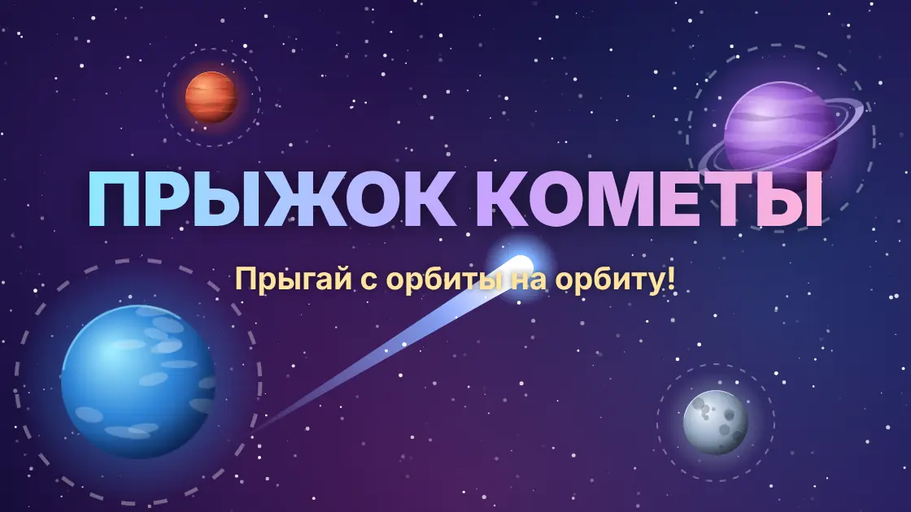
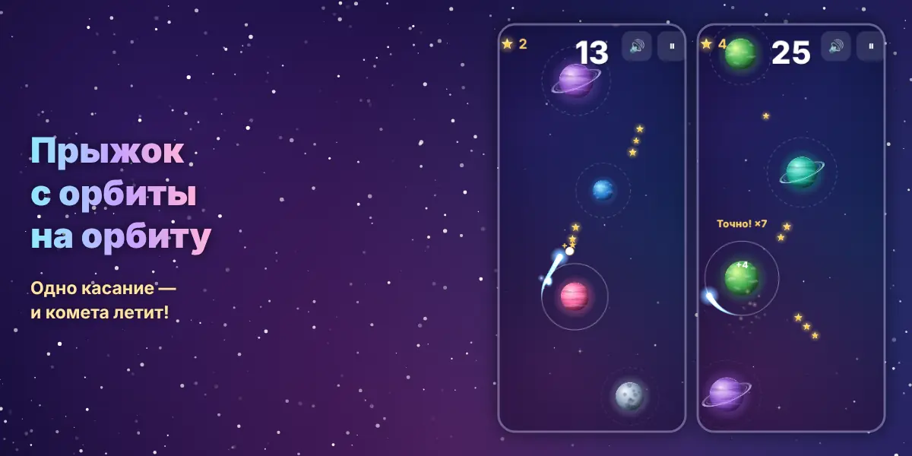
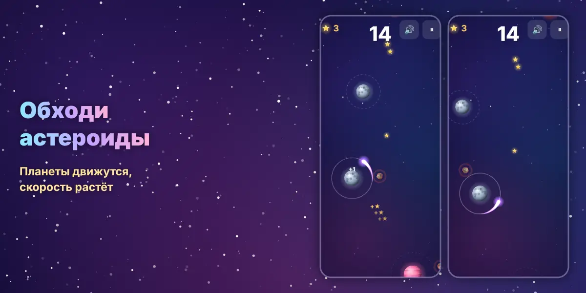

Прыжок кометы — играть онлайн во ВКонтакте
Маленькая комета кружит вокруг планеты. Нажмите в нужный момент — и она перелетит на орбиту следующей планеты.
Бесплатно · без всплывающей рекламы

Об игре
Об игре «Прыжок кометы»
Комета летает по орбите вокруг планеты. Нажмите в нужный момент — она сорвётся с орбиты и полетит по касательной. Попадите на орбиту следующей планеты и поднимайтесь всё выше в космос.
Цельтесь точно в планету — получите бонус «Точно!» и серию множителей. По пути собирайте звёзды и открывайте новые кометы: огненную, изумрудную, фиалковую, золотую и радужную. Чем дальше — тем быстрее полёт: появляются движущиеся планеты и кружащие астероиды.

Особенности
Что есть в игре
- Управление одним касанием или пробелом
- Бонус «Точно!» и множители за серию
- 6 комет: от обычной до радужной
- Движущиеся планеты и астероиды на высоте
- Без всплывающей рекламы: только баннер сбоку и бонусы по кнопке
- 60 кадров в секунду на ПК и телефоне

Играть
Как начать играть
- Нажмите «Играть во ВКонтакте» — игра откроется в приложении или браузере.
- Разрешите запуск игры — регистрация не нужна, прогресс сохраняется в вашем аккаунте ВКонтакте.
- Играйте на компьютере или телефоне.
Частые вопросы
Как управлять кометой?
Пробел, Enter, клик мышью или касание экрана — прыжок.
Есть ли всплывающая реклама?
Нет. Реклама за награду — только по кнопке, которую вы нажимаете сами.
Другие игры и программы
Морской бой онлайн во ВКонтакте — с людьми и друзьями«Морской бой онлайн» во ВКонтакте: бои с живыми игроками, комната для игры с другом, игра с компьютером, рейти…Падающие шарики — игра во ВКонтакте: слияние шариков«Падающие шарики» во ВКонтакте: роняйте шарики в банку, одинаковые сливаются в шарик побольше. 11 размеров — о…Сортировка шариков по пробиркам — головоломка во ВКонтакте«Сортировка шариков» во ВКонтакте: разложите цветные шарики по пробиркам. Сотни уровней от 3 до 12 цветов, каж…Тетрис онлайн во ВКонтакте — играть бесплатноКлассический Тетрис во ВКонтакте: собирайте линии из падающих фигур, тень падения, запас фигуры и три следующи…Защита башен — Tower Defense во ВКонтакте: 60 уровней«Защита башен» во ВКонтакте: 5 башен, 8 видов врагов, 60 уровней в 6 мирах и общий чат. Пиксельная Tower Defen…Бот-кликер для Battlesmiths — клиент для Windows, демо 3 дняБот-кликер для игры Battlesmiths с клиентом под Windows. Демо-режим 3 дня бесплатно, продление на любое число …Бот для Dungeon Crusher («Крушители Подземелий») — автобой, фарм, заданияБот-кликер для Dungeon Crusher: Soul Hunters — автобой, сбор ресурсов, ежедневные задания и управление энергие…Бот для Catacombs World (BlueStacks) — фарм на автоматеБот-кликер для фарма в Catacombs World, работает с эмулятором BlueStacks на ПК. Скачать в теме ВКонтакте, паро…Бот для Gems of War — экспедиции по кругу, демо 3 дняБот для Gems of War: сам выставляет нужное разрешение игры и ходит экспедицию по кругу. Демо-режим 3 дня беспл…